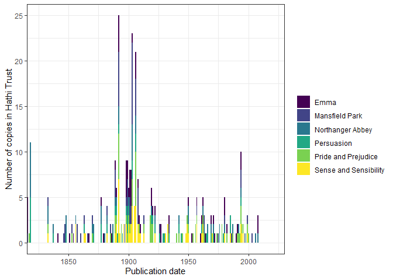
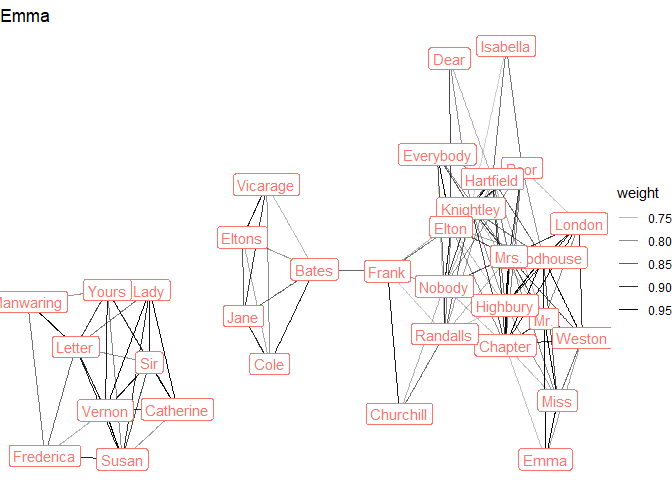
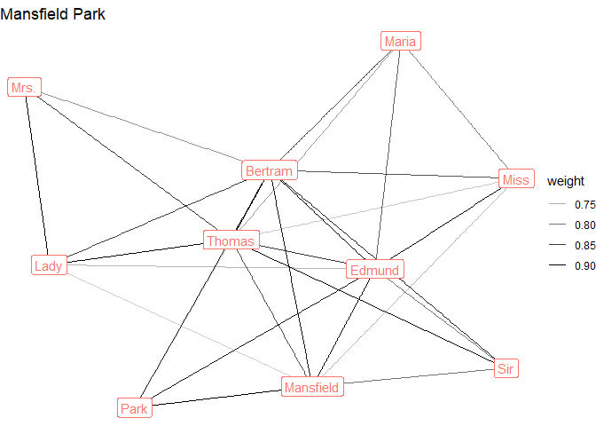
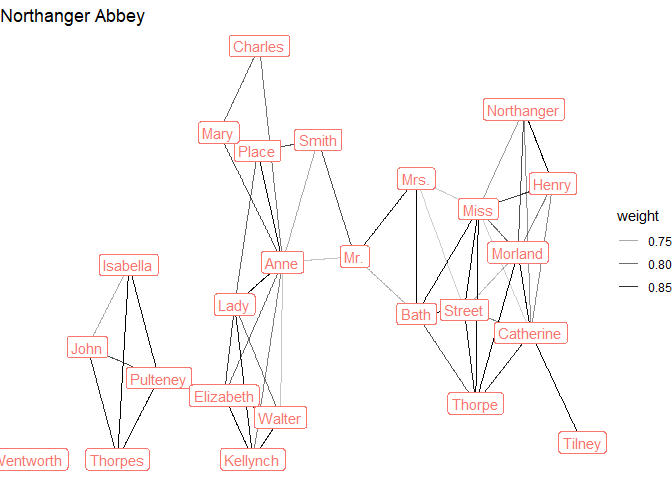
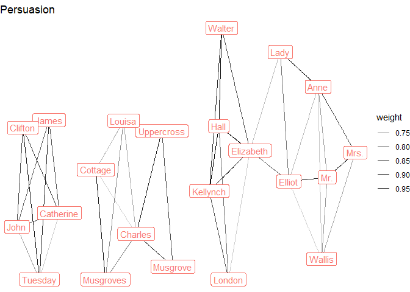
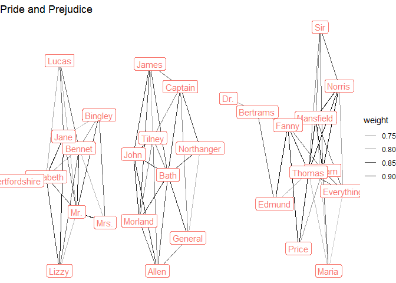

An Example Workflow
A typical workflow using this package involves selecting a sample of Hathi Trust IDs to work with using the function workset_builder(); downloading and caching their extracted features files; reading some selection of these files into memory, based on their metadata or some other characteristics; and using the in-memory data to create document-term or term-co-occurrence matrices that can be used for further analysis.
The main feature of this package is the extensive use of caching: sync once with Hathi Trust, cache all files to appropriate formats, and read them in bulk (including their metadata).
This vignette gives an example of this workflow using texts from Jane Austen.
Selecting a sample
We first load the package and create a workset with all the texts that list “Jane Austen” as an author/contributor.
library(tidyverse)
library(hathiTools)
workset <- workset_builder(name = "Jane Austen")
workset
#> # A tibble: 881 × 2
#> htid n
#> <chr> <int>
#> 1 pst.000023140158 1535
#> 2 inu.30000011371634 1425
#> 3 uc2.ark:/13960/t7mp4ws0s 1364
#> 4 mdp.39015066040364 1361
#> 5 mdp.39015004788835 1360
#> 6 dul1.ark:/13960/t5q82jx98 1258
#> 7 pst.000051409333 1109
#> 8 pst.000031098625 1108
#> 9 dul1.ark:/13960/t8x93fx03 1052
#> 10 dul1.ark:/13960/t4th9rm8z 1023
#> # … with 871 more rows
#> # ℹ Use `print(n = ...)` to see more rowsLet’s look at the metadata of the first 10:
meta <- get_workset_meta(workset[1:10,])
meta %>%
select(htid, title, contributor, pubDate)
#> # A tibble: 10 × 4
#> htid title contr…¹ pubDate
#> <chr> <chr> <chr> <dbl>
#> 1 pst.000023140158 The complete novels / "{\"na… 1994
#> 2 inu.30000011371634 Complete novels / "{\"na… 1928
#> 3 uc2.ark:/13960/t7mp4ws0s The complete novels of Jane Austen. "{\"na… 1933
#> 4 mdp.39015066040364 The complete novels of Jane Austen. "{\"na… 1979
#> 5 mdp.39015004788835 The complete novels of Jane Austen. "{\"na… 1933
#> 6 dul1.ark:/13960/t5q82jx98 Northanger Abbey : and Persuasion / "[{\"n… 1818
#> 7 pst.000051409333 The Complete novels / "{\"na… 1981
#> 8 pst.000031098625 The complete novels / "{\"na… 1981
#> 9 dul1.ark:/13960/t8x93fx03 Emma : a novel : in three volumes / "{\"na… 1816
#> 10 dul1.ark:/13960/t4th9rm8z Mansfield Park : a novel : in thre… "{\"na… 1816
#> # … with abbreviated variable name ¹contributorWe can create six worksets for each of the main titles, and download their metadata:
emma <- workset_builder(name = "Jane Austen", title = "Emma")
mansfield_park <- workset_builder(name = "Jane Austen", title = "Mansfield Park")
northanger_abbey <- workset_builder(name = "Jane Austen", title = "Northanger Abbey")
sense_and_sensibility <- workset_builder(name = "Jane Austen", title = "Sense and Sensibility")
pride_and_prejudice <- workset_builder(name = "Jane Austen", title = "Pride and Prejudice")
persuasion <- workset_builder(name = "Jane Austen", title = "Persuasion")
austen_novels <- bind_rows(list("Emma" = emma,
"Mansfield Park" = mansfield_park,
"Northanger Abbey" = northanger_abbey,
"Sense and Sensibility" = sense_and_sensibility,
"Pride and Prejudice" = pride_and_prejudice,
"Persuasion" = persuasion),
.id = "Novel")
meta <- get_workset_meta(austen_novels)The workset metadata is by default cached in "./metadata", so the function will not attempt to download it from Hathi a second time. Downloading metadata this way is quite slow, and likely to fail for more than about 1,000 volumes; a better way of gathering metadata for many volumes is to rsync the EF files (using rsync_from_hathi()), and then use cache_htids() to cache them (including the volume- and page-level metadata).
We can visualize this metadata:
meta %>%
left_join(austen_novels) %>%
count(pubDate, Novel) %>%
ggplot(aes(x = pubDate, y = n, fill = Novel)) +
geom_col() +
theme_bw() +
coord_cartesian(xlim = c(1825, 2020)) +
scale_fill_viridis_d() +
labs(x = "Publication date", y = "Number of copies in Hathi Trust",
fill = "")
Note that actual titles are quite various, including adaptations of Austen’s work:
| Novel | title | n |
|---|---|---|
| Emma | Emma | 3 |
| Emma | Emma / | 26 |
| Emma | Emma / Jane Austen edited by Mary Lascelles ; new introduction by Peter Conrad. | 1 |
| Emma | Emma : a novel / | 7 |
| Emma | Emma : a novel : in three volumes / | 1 |
| Emma | Emma : a novel. | 3 |
| Emma | Emma : a novel. / | 1 |
| Emma | Emma : Lady Susan / | 1 |
| Emma | Emma : With illus. of the author and her environment and pictures from early editions of the book / | 1 |
| Emma | Emma, | 4 |
| Emma | Emma. | 10 |
| Emma | Emma: a novel. | 1 |
| Emma | Emma; | 3 |
| Emma | Emma; an authoritative text, backgrounds, reviews, and criticism. | 1 |
| Emma | Sense and sensibility ; Emma ; and Persuasion. | 1 |
| Mansfield Park | Mansfield Park | 2 |
| Mansfield Park | Mansfield park / | 3 |
| Mansfield Park | Mansfield Park / | 31 |
| Mansfield Park | Mansfield Park : a novel / | 8 |
| Mansfield Park | Mansfield Park : a novel : in three volumes / | 1 |
| Mansfield Park | Mansfield Park : a novel. | 3 |
| Mansfield Park | Mansfield park, | 3 |
| Mansfield Park | Mansfield Park, | 2 |
| Mansfield Park | Mansfield park. | 1 |
| Mansfield Park | Mansfield Park. | 6 |
| Mansfield Park | Mansfield Park: a novel. | 6 |
| Mansfield Park | Pride and prejudice ; Mansfield park ; and Northanger Abbey / | 1 |
| Northanger Abbey | Northanger Abbey | 1 |
| Northanger Abbey | Northanger Abbey & Persuasion | 1 |
| Northanger Abbey | Northanger abbey / | 6 |
| Northanger Abbey | Northanger Abbey / | 7 |
| Northanger Abbey | Northanger Abbey : \[And Persuasion.\] | 1 |
| Northanger Abbey | Northanger Abbey : a novel / | 1 |
| Northanger Abbey | Northanger Abbey : A novel / | 1 |
| Northanger Abbey | Northanger Abbey : a novel ; Persuasion / | 1 |
| Northanger Abbey | Northanger Abbey : a novel. | 1 |
| Northanger Abbey | Northanger Abbey : and Persuasion / | 8 |
| Northanger Abbey | Northanger abbey : and, Persuasion / | 1 |
| Northanger Abbey | Northanger Abbey ; and Persuasion. | 1 |
| Northanger Abbey | Northanger Abbey ; and, Persuasion / | 1 |
| Northanger Abbey | Northanger Abbey ; Lady Susan ; The Watsons ; and, Sanditon / | 1 |
| Northanger Abbey | Northanger Abbey ; Persuasion / | 1 |
| Northanger Abbey | Northanger abbey \[&\] Persuasion / | 1 |
| Northanger Abbey | Northanger Abbey \[with her “Persuasion”.\] | 1 |
| Northanger Abbey | Northanger Abbey and persuasion / | 1 |
| Northanger Abbey | Northanger abbey and Persuasion. | 1 |
| Northanger Abbey | Northanger Abbey and Persuasion. | 1 |
| Northanger Abbey | Northanger abbey, a novel and Persuasion. | 1 |
| Northanger Abbey | Northanger Abbey, and Persuasion / | 1 |
| Northanger Abbey | Northanger abbey, Persuasion, | 1 |
| Northanger Abbey | Northanger Abbey. | 2 |
| Northanger Abbey | Northanger abbey. A novel. | 1 |
| Northanger Abbey | Northanger Abbey; and, Persuasion; | 1 |
| Northanger Abbey | Pride & prejudice : Northanger Abbey / | 1 |
| Northanger Abbey | Pride and prejudice : and Northanger Abbey / | 1 |
| Northanger Abbey | Pride and prejudice ; Mansfield park ; and Northanger Abbey / | 1 |
| Persuasion | Northanger Abbey & Persuasion | 1 |
| Persuasion | Northanger Abbey : \[And Persuasion.\] | 1 |
| Persuasion | Northanger Abbey : a novel ; Persuasion / | 1 |
| Persuasion | Northanger Abbey : and Persuasion / | 8 |
| Persuasion | Northanger abbey : and, Persuasion / | 1 |
| Persuasion | Northanger Abbey ; and Persuasion. | 1 |
| Persuasion | Northanger Abbey ; and, Persuasion / | 1 |
| Persuasion | Northanger Abbey ; Persuasion / | 1 |
| Persuasion | Northanger abbey \[&\] Persuasion / | 1 |
| Persuasion | Northanger Abbey \[with her “Persuasion”.\] | 1 |
| Persuasion | Northanger Abbey and persuasion / | 1 |
| Persuasion | Northanger abbey and Persuasion. | 1 |
| Persuasion | Northanger Abbey and Persuasion. | 1 |
| Persuasion | Northanger abbey, a novel and Persuasion. | 1 |
| Persuasion | Northanger Abbey, and Persuasion / | 1 |
| Persuasion | Northanger abbey, Persuasion, | 1 |
| Persuasion | Northanger Abbey; and, Persuasion; | 1 |
| Persuasion | Persuasion / | 7 |
| Persuasion | Persuasion and Lady Susan / | 1 |
| Persuasion | Persuasion, | 2 |
| Persuasion | Persuasion. | 7 |
| Persuasion | Sense and sensibility ; and Persuasion … | 1 |
| Persuasion | Sense and sensibility ; Emma ; and Persuasion. | 1 |
| Persuasion | The manuscript chapters of Persuasion / | 2 |
| Persuasion | Two chapters of Persuasion printed from Jane Austen’s autograph. | 1 |
| Pride and Prejudice | Pride and prejudice / | 35 |
| Pride and Prejudice | Pride and prejudice : a novel / | 3 |
| Pride and Prejudice | Pride and prejudice : a novel : in two volumes / | 1 |
| Pride and Prejudice | Pride and prejudice : a novel. | 3 |
| Pride and Prejudice | Pride and prejudice : and Northanger Abbey / | 1 |
| Pride and Prejudice | Pride and prejudice ; Mansfield park ; and Northanger Abbey / | 1 |
| Pride and Prejudice | Pride and prejudice \[and\] Sense and sensibility. | 1 |
| Pride and Prejudice | Pride and prejudice a novel / | 2 |
| Pride and Prejudice | Pride and prejudice, | 6 |
| Pride and Prejudice | Pride and prejudice. | 9 |
| Pride and Prejudice | Pride and prejudice. Sense and sensibility. | 1 |
| Pride and Prejudice | Pride and prejudice: text, backgrounds, criticism. | 1 |
| Sense and Sensibility | Pride and prejudice \[and\] Sense and sensibility. | 1 |
| Sense and Sensibility | Pride and prejudice. Sense and sensibility. | 1 |
| Sense and Sensibility | Sense and sensibility | 1 |
| Sense and Sensibility | Sense and sensibility / | 39 |
| Sense and Sensibility | Sense and sensibility : / | 1 |
| Sense and Sensibility | Sense and sensibility : a novel / | 4 |
| Sense and Sensibility | Sense and sensibility ; and Persuasion … | 1 |
| Sense and Sensibility | Sense and sensibility ; Emma ; and Persuasion. | 1 |
| Sense and Sensibility | Sense and sensibility, | 2 |
| Sense and Sensibility | Sense and sensibility. | 11 |
| Sense and Sensibility | Sense and sensibility. by Ian Watt. | 1 |
| Sense and Sensibility | Sense and sensibility: a novel. v. 1 | 4 |
| Sense and Sensibility | Sense and sensibility; | 1 |
Let’s select a subset of these works to model more fully:
Syncing and Caching Extracted Features
We now rsync the JSON files of the volumes in this sample from Hathi Trust and cache them locally in fast-loading formats.
This package has opinionated defaults: if you don’t do anything, it will assume you want to rsync and cache all your extracted features files to getOption("hathiTools.ef.dir"), which is just ./hathi-ef.You can, however, set your options differently, either by specifying dir explicitly in rsync_from_hathi(), cache_htids(), find_cached_htids(), and read_cached_htids(), or by setting the hathiTools.ef.dir option directly (i.e., calling options(hathiTools.ef.dir = "your_preferred_dir")).
We’ll use a temporary directory here:
rsync_from_hathi(austen_sample)
#> 0
#> [1] 0Then we cache them to csv and parquet formats simultaneously (just because we can: you can also just cache them to one of these formats):
cache_htids(austen_sample, cache_format = c("csv", "parquet"))
#> # A tibble: 108 × 5
#> htid local_loc cache…¹ cache…² exists
#> <chr> <glue> <chr> <chr> <lgl>
#> 1 pst.000066449096 C:\Users\marquexa\AppData\L… csv.gz ef TRUE
#> 2 mdp.39015041924641 C:\Users\marquexa\AppData\L… csv.gz ef TRUE
#> 3 mdp.39015005734879 C:\Users\marquexa\AppData\L… csv.gz ef TRUE
#> 4 uiuo.ark:/13960/t4rj54s3j C:\Users\marquexa\AppData\L… csv.gz ef TRUE
#> 5 hvd.32044050792100 C:\Users\marquexa\AppData\L… csv.gz ef TRUE
#> 6 hvd.hwiwg8 C:\Users\marquexa\AppData\L… csv.gz ef TRUE
#> 7 mdp.39015091627573 C:\Users\marquexa\AppData\L… csv.gz ef TRUE
#> 8 uc1.31158008377706 C:\Users\marquexa\AppData\L… csv.gz ef TRUE
#> 9 hvd.32044004573549 C:\Users\marquexa\AppData\L… csv.gz ef TRUE
#> 10 mdp.39015007028700 C:\Users\marquexa\AppData\L… csv.gz ef TRUE
#> # … with 98 more rows, and abbreviated variable names ¹cache_format,
#> # ²cache_type
#> # ℹ Use `print(n = ...)` to see more rowsBy default, cache_htids() caches EF files and associated volume-level and page-level metadata, though you can also just cache metadata or EF files separately:
find_cached_htids(austen_sample, cache_format = c("csv", "parquet", "none")) %>%
count(cache_type, cache_format)
#> # A tibble: 7 × 3
#> cache_type cache_format n
#> <chr> <chr> <int>
#> 1 ef csv.gz 18
#> 2 ef parquet 18
#> 3 meta csv.gz 18
#> 4 meta parquet 18
#> 5 none json.bz2 18
#> 6 pagemeta csv.gz 18
#> 7 pagemeta parquet 18The function find_cached_htids() finds the physical location of files in the sample, in case you prefer to manipulate these directly:
find_cached_htids(austen_sample, cache_format = "none")
#> # A tibble: 18 × 5
#> htid local_loc cache…¹ cache…² exists
#> <chr> <glue> <chr> <chr> <lgl>
#> 1 pst.000066449096 C:\Users\marquexa\AppData\L… json.b… none TRUE
#> 2 mdp.39015041924641 C:\Users\marquexa\AppData\L… json.b… none TRUE
#> 3 mdp.39015005734879 C:\Users\marquexa\AppData\L… json.b… none TRUE
#> 4 uiuo.ark:/13960/t4rj54s3j C:\Users\marquexa\AppData\L… json.b… none TRUE
#> 5 hvd.32044050792100 C:\Users\marquexa\AppData\L… json.b… none TRUE
#> 6 hvd.hwiwg8 C:\Users\marquexa\AppData\L… json.b… none TRUE
#> 7 mdp.39015091627573 C:\Users\marquexa\AppData\L… json.b… none TRUE
#> 8 uc1.31158008377706 C:\Users\marquexa\AppData\L… json.b… none TRUE
#> 9 hvd.32044004573549 C:\Users\marquexa\AppData\L… json.b… none TRUE
#> 10 mdp.39015007028700 C:\Users\marquexa\AppData\L… json.b… none TRUE
#> 11 mdp.39015009048458 C:\Users\marquexa\AppData\L… json.b… none TRUE
#> 12 uiuo.ark:/13960/t09w14g77 C:\Users\marquexa\AppData\L… json.b… none TRUE
#> 13 pst.000025735086 C:\Users\marquexa\AppData\L… json.b… none TRUE
#> 14 mdp.39015004997253 C:\Users\marquexa\AppData\L… json.b… none TRUE
#> 15 hvd.hn6m7q C:\Users\marquexa\AppData\L… json.b… none TRUE
#> 16 uiuo.ark:/13960/t3fx7zt1f C:\Users\marquexa\AppData\L… json.b… none TRUE
#> 17 hvd.hwhs4m C:\Users\marquexa\AppData\L… json.b… none TRUE
#> 18 nyp.33433074920525 C:\Users\marquexa\AppData\L… json.b… none TRUE
#> # … with abbreviated variable names ¹cache_format, ²cache_type
find_cached_htids(austen_sample, cache_type = "ef", cache_format = "csv")
#> # A tibble: 18 × 5
#> htid local_loc cache…¹ cache…² exists
#> <chr> <glue> <chr> <chr> <lgl>
#> 1 pst.000066449096 C:\Users\marquexa\AppData\L… csv.gz ef TRUE
#> 2 mdp.39015041924641 C:\Users\marquexa\AppData\L… csv.gz ef TRUE
#> 3 mdp.39015005734879 C:\Users\marquexa\AppData\L… csv.gz ef TRUE
#> 4 uiuo.ark:/13960/t4rj54s3j C:\Users\marquexa\AppData\L… csv.gz ef TRUE
#> 5 hvd.32044050792100 C:\Users\marquexa\AppData\L… csv.gz ef TRUE
#> 6 hvd.hwiwg8 C:\Users\marquexa\AppData\L… csv.gz ef TRUE
#> 7 mdp.39015091627573 C:\Users\marquexa\AppData\L… csv.gz ef TRUE
#> 8 uc1.31158008377706 C:\Users\marquexa\AppData\L… csv.gz ef TRUE
#> 9 hvd.32044004573549 C:\Users\marquexa\AppData\L… csv.gz ef TRUE
#> 10 mdp.39015007028700 C:\Users\marquexa\AppData\L… csv.gz ef TRUE
#> 11 mdp.39015009048458 C:\Users\marquexa\AppData\L… csv.gz ef TRUE
#> 12 uiuo.ark:/13960/t09w14g77 C:\Users\marquexa\AppData\L… csv.gz ef TRUE
#> 13 pst.000025735086 C:\Users\marquexa\AppData\L… csv.gz ef TRUE
#> 14 mdp.39015004997253 C:\Users\marquexa\AppData\L… csv.gz ef TRUE
#> 15 hvd.hn6m7q C:\Users\marquexa\AppData\L… csv.gz ef TRUE
#> 16 uiuo.ark:/13960/t3fx7zt1f C:\Users\marquexa\AppData\L… csv.gz ef TRUE
#> 17 hvd.hwhs4m C:\Users\marquexa\AppData\L… csv.gz ef TRUE
#> 18 nyp.33433074920525 C:\Users\marquexa\AppData\L… csv.gz ef TRUE
#> # … with abbreviated variable names ¹cache_format, ²cache_type
find_cached_htids(austen_sample, cache_type = "meta", cache_format = "csv")
#> # A tibble: 18 × 5
#> htid local_loc cache…¹ cache…² exists
#> <chr> <glue> <chr> <chr> <lgl>
#> 1 pst.000066449096 C:\Users\marquexa\AppData\L… csv.gz meta TRUE
#> 2 mdp.39015041924641 C:\Users\marquexa\AppData\L… csv.gz meta TRUE
#> 3 mdp.39015005734879 C:\Users\marquexa\AppData\L… csv.gz meta TRUE
#> 4 uiuo.ark:/13960/t4rj54s3j C:\Users\marquexa\AppData\L… csv.gz meta TRUE
#> 5 hvd.32044050792100 C:\Users\marquexa\AppData\L… csv.gz meta TRUE
#> 6 hvd.hwiwg8 C:\Users\marquexa\AppData\L… csv.gz meta TRUE
#> 7 mdp.39015091627573 C:\Users\marquexa\AppData\L… csv.gz meta TRUE
#> 8 uc1.31158008377706 C:\Users\marquexa\AppData\L… csv.gz meta TRUE
#> 9 hvd.32044004573549 C:\Users\marquexa\AppData\L… csv.gz meta TRUE
#> 10 mdp.39015007028700 C:\Users\marquexa\AppData\L… csv.gz meta TRUE
#> 11 mdp.39015009048458 C:\Users\marquexa\AppData\L… csv.gz meta TRUE
#> 12 uiuo.ark:/13960/t09w14g77 C:\Users\marquexa\AppData\L… csv.gz meta TRUE
#> 13 pst.000025735086 C:\Users\marquexa\AppData\L… csv.gz meta TRUE
#> 14 mdp.39015004997253 C:\Users\marquexa\AppData\L… csv.gz meta TRUE
#> 15 hvd.hn6m7q C:\Users\marquexa\AppData\L… csv.gz meta TRUE
#> 16 uiuo.ark:/13960/t3fx7zt1f C:\Users\marquexa\AppData\L… csv.gz meta TRUE
#> 17 hvd.hwhs4m C:\Users\marquexa\AppData\L… csv.gz meta TRUE
#> 18 nyp.33433074920525 C:\Users\marquexa\AppData\L… csv.gz meta TRUE
#> # … with abbreviated variable names ¹cache_format, ²cache_typeOnce cached, we can read this whole corpus into memory very quickly, including all the volume-level and page-level metadata. Here we load from the default cache format, which is given by getOption("hathiTools.cacheformat") and is csv.gz unless explicitly changed:
full_corpus <- read_cached_htids(austen_sample)
full_corpus
#> # A tibble: 1,361,736 × 44
#> htid token POS count section page schem…¹ id type dateC…² title
#> <chr> <chr> <chr> <int> <chr> <int> <chr> <chr> <chr> <int> <chr>
#> 1 pst.000066… Clas… NNS 1 body 5 https:… http… "[[\… 2.02e7 Emma…
#> 2 pst.000066… . . 1 body 5 https:… http… "[[\… 2.02e7 Emma…
#> 3 pst.000066… BORD… NNS 1 body 5 https:… http… "[[\… 2.02e7 Emma…
#> 4 pst.000066… Plea… UH 1 body 8 https:… http… "[[\… 2.02e7 Emma…
#> 5 pst.000066… writ… VBG 1 body 8 https:… http… "[[\… 2.02e7 Emma…
#> 6 pst.000066… Brot… NNPS 1 body 8 https:… http… "[[\… 2.02e7 Emma…
#> 7 pst.000066… rese… VBN 1 body 8 https:… http… "[[\… 2.02e7 Emma…
#> 8 pst.000066… any DT 3 body 8 https:… http… "[[\… 2.02e7 Emma…
#> 9 pst.000066… LLC NNP 1 body 8 https:… http… "[[\… 2.02e7 Emma…
#> 10 pst.000066… this DT 1 body 8 https:… http… "[[\… 2.02e7 Emma…
#> # … with 1,361,726 more rows, 33 more variables: alternateTitle <chr>,
#> # contributor <chr>, pubDate <int>, publisher <chr>, pubPlace <chr>,
#> # language <chr>, accessRights <chr>, accessProfile <chr>,
#> # sourceInstitution <chr>, mainEntityOfPage <chr>, oclc <chr>, isbn <chr>,
#> # genre <chr>, typeOfResource <chr>, lastRightsUpdateDate <int>,
#> # enumerationChronology <chr>, lcc <chr>, lccn <chr>, category <chr>,
#> # seq <chr>, version <chr>, tokenCount <int>, lineCount <int>, …
#> # ℹ Use `print(n = ...)` to see more rows, and `colnames()` to see all variable namesYou can also load only particular bits of the data. For example, if you only want to load the extracted features files, volume-level metadata, and page-level metadata, you can do this:
read_cached_htids(austen_sample, cache_type = "ef")
#> # A tibble: 1,361,736 × 6
#> htid token POS count section page
#> <chr> <chr> <chr> <int> <chr> <int>
#> 1 pst.000066449096 Classics NNS 1 body 5
#> 2 pst.000066449096 . . 1 body 5
#> 3 pst.000066449096 BORDERS NNS 1 body 5
#> 4 pst.000066449096 Please UH 1 body 8
#> 5 pst.000066449096 writing VBG 1 body 8
#> 6 pst.000066449096 Brothers NNPS 1 body 8
#> 7 pst.000066449096 reserved VBN 1 body 8
#> 8 pst.000066449096 any DT 3 body 8
#> 9 pst.000066449096 LLC NNP 1 body 8
#> 10 pst.000066449096 this DT 1 body 8
#> # … with 1,361,726 more rows
#> # ℹ Use `print(n = ...)` to see more rows
read_cached_htids(austen_sample, cache_type = "meta")
#> # A tibble: 18 × 25
#> htid schem…¹ id type dateC…² title alter…³ contr…⁴ pubDate publi…⁵
#> <chr> <chr> <chr> <chr> <int> <chr> <chr> <chr> <int> <chr>
#> 1 pst.000066… https:… http… "[[\… 2.02e7 Emma… "[[\"L… "[{\"i… 2008 "{\"id…
#> 2 mdp.390150… https:… http… "[[\… 2.02e7 Emma… <NA> "{\"id… 1982 "{\"id…
#> 3 mdp.390150… https:… http… "[[\… 2.02e7 Emma… <NA> "[{\"i… 1898 "{\"id…
#> 4 uiuo.ark:/… https:… http… "[[\… 2.02e7 Mans… <NA> "{\"id… 1814 "{\"id…
#> 5 hvd.320440… https:… http… "[[\… 2.02e7 Mans… <NA> "{\"id… 1892 "{\"id…
#> 6 hvd.hwiwg8 https:… http… "[[\… 2.02e7 Mans… <NA> "{\"id… 1903 "{\"id…
#> 7 mdp.390150… https:… http… "[[\… 2.02e7 Nort… "[[\"N… "[{\"i… 1877 "{\"id…
#> 8 uc1.311580… https:… http… "[[\… 2.02e7 Nort… <NA> "[{\"i… 1922 "[{\"i…
#> 9 hvd.320440… https:… http… "[[\… 2.02e7 Nort… <NA> "{\"id… 1903 "{\"id…
#> 10 mdp.390150… https:… http… "[[\… 2.02e7 Pers… <NA> "{\"id… 1922 "[{\"i…
#> 11 mdp.390150… https:… http… "[[\… 2.02e7 Nort… <NA> "{\"id… 1892 "{\"id…
#> 12 uiuo.ark:/… https:… http… "[[\… 2.02e7 Nort… <NA> "[{\"i… 1818 "[{\"i…
#> 13 pst.000025… https:… http… "[[\… 2.02e7 Prid… <NA> "{\"id… NA "{\"id…
#> 14 mdp.390150… https:… http… "[[\… 2.02e7 Prid… <NA> "{\"id… 1913 "[{\"i…
#> 15 hvd.hn6m7q https:… http… "[[\… 2.02e7 Prid… "[[\"N… "{\"id… 1906 "{\"id…
#> 16 uiuo.ark:/… https:… http… "[[\… 2.02e7 Sens… <NA> "{\"id… 1811 "{\"id…
#> 17 hvd.hwhs4m https:… http… "[[\… 2.02e7 Sens… <NA> "{\"id… 1892 "{\"id…
#> 18 nyp.334330… https:… http… "[[\… 2.02e7 Sens… <NA> "{\"id… 1892 "{\"id…
#> # … with 15 more variables: pubPlace <chr>, language <chr>, accessRights <chr>,
#> # accessProfile <chr>, sourceInstitution <chr>, mainEntityOfPage <chr>,
#> # oclc <chr>, isbn <chr>, genre <chr>, typeOfResource <chr>,
#> # lastRightsUpdateDate <int>, enumerationChronology <chr>, lcc <chr>,
#> # lccn <chr>, category <chr>, and abbreviated variable names ¹schemaVersion,
#> # ²dateCreated, ³alternateTitle, ⁴contributor, ⁵publisher
#> # ℹ Use `colnames()` to see all variable names
read_cached_htids(austen_sample, cache_type = "pagemeta")
#> # A tibble: 13,322 × 17
#> htid page seq version token…¹ lineC…² empty…³ sente…⁴ calcu…⁵ secti…⁶
#> <chr> <int> <chr> <chr> <int> <int> <int> <int> <chr> <int>
#> 1 pst.0000… 5 0000… 542549… 3 2 0 2 en 3
#> 2 pst.0000… 8 0000… 116e6b… 128 19 0 5 en 128
#> 3 pst.0000… 9 0000… 281ad5… 3 2 0 NA so 3
#> 4 pst.0000… 11 0000… 9e6f16… 1 1 0 NA <NA> 1
#> 5 pst.0000… 13 0000… 97a337… 236 21 1 7 en 235
#> 6 pst.0000… 13 0000… 97a337… 236 21 1 7 en 1
#> 7 pst.0000… 14 0000… eecf06… 490 37 0 19 en 4
#> 8 pst.0000… 14 0000… eecf06… 490 37 0 19 en 485
#> 9 pst.0000… 14 0000… eecf06… 490 37 0 19 en 1
#> 10 pst.0000… 15 0000… 49951b… 494 37 0 14 en 493
#> # … with 13,312 more rows, 7 more variables: sectionLineCount <int>,
#> # sectionEmptyLineCount <int>, sectionSentenceCount <int>,
#> # sectionCapAlphaSeq <int>, sectionBeginCharCount <chr>,
#> # sectionEndCharCount <chr>, section <chr>, and abbreviated variable names
#> # ¹tokenCount, ²lineCount, ³emptyLineCount, ⁴sentenceCount,
#> # ⁵calculatedLanguage, ⁶sectionTokenCount
#> # ℹ Use `print(n = ...)` to see more rows, and `colnames()` to see all variable namesFor large corpora, we can also cache files to the feather or parquet format, and manipulate them with the {arrow} package:
library(arrow)
# cache_htids(austen_sample, cache_format = "parquet") Not needed - we already cached files to the right format
austen_dataset <- read_cached_htids(austen_sample, cache_format = "parquet")
austen_dataset
#> FileSystemDataset (query)
#> htid: string
#> token: string
#> POS: string
#> count: int32
#> section: string
#> page: int32
#> schemaVersion: string
#> id: string
#> type: string
#> dateCreated: int32
#> title: string
#> alternateTitle: string
#> contributor: string
#> pubDate: int32
#> publisher: string
#> pubPlace: string
#> language: string
#> accessRights: string
#> accessProfile: string
#> sourceInstitution: string
#> mainEntityOfPage: string
#> oclc: string
#> isbn: string
#> genre: string
#> typeOfResource: string
#> lastRightsUpdateDate: int32
#> seq: string
#> version: string
#> tokenCount: int32
#> lineCount: int32
#> emptyLineCount: int32
#> sentenceCount: int32
#> calculatedLanguage: string
#> sectionTokenCount: int32
#> sectionLineCount: int32
#> sectionEmptyLineCount: int32
#> sectionSentenceCount: int32
#> sectionCapAlphaSeq: int32
#> sectionBeginCharCount: string
#> sectionEndCharCount: string
#>
#> See $.data for the source Arrow objectThis enables some very fast aggregations without having to load all the data in memory. For a small corpus like this this does not make a difference (we can put the entire corpus in memory), but in principle one can do operations like this with thousands of files:
austen_dataset %>%
count(token, wt=count, sort = TRUE) %>%
collect()
#> # A tibble: 28,833 × 2
#> token n
#> <chr> <int>
#> 1 , 167916
#> 2 . 90404
#> 3 the 73470
#> 4 to 68624
#> 5 and 63718
#> 6 of 63020
#> 7 a 38757
#> 8 her 37051
#> 9 I 36750
#> 10 was 32556
#> # … with 28,823 more rows
#> # ℹ Use `print(n = ...)` to see more rowsSuppose we only want pages where the language is English, there are at least two sentences in the body of the text, and in those pages we only want the nouns that start with a capital letter. This is very fast and uses little memory:
nouns_only_starts_with_cap <- austen_dataset %>%
filter(calculatedLanguage == "en",
section == "body",
sectionSentenceCount > 2,
str_detect(POS, "^NN"),
str_detect(token, "^[A-Z][a-z]")) %>%
collect()Finally, we can also clear the cache to get rid of files we don’t want:
clear_cache(austen_sample, cache_format = "csv")We can now use the parquet dataset to create a quanteda document-feature or term-cooccurrence matrix for further analysis using {tidytext} and other packages.
library(quanteda)
library(tidytext)
dfm <- nouns_only_starts_with_cap %>%
left_join(austen_sample) %>%
mutate(text_id = paste(htid, page, sep = "_"),
token = paste(token, Novel, sep = "_")) %>%
cast_dfm(text_id, token, count)
dfm
#> Document-feature matrix of: 6,964 documents, 4,726 features (99.81% sparse) and 0 docvars.
#> features
#> docs Books_Emma Box_Emma Number_Emma Buccaneer_Emma
#> mdp.39015041924641_10 1 1 1 1
#> mdp.39015041924641_13 0 0 0 0
#> mdp.39015041924641_14 0 0 0 0
#> mdp.39015041924641_15 0 0 0 0
#> mdp.39015041924641_16 0 0 0 0
#> mdp.39015041924641_17 0 0 0 0
#> features
#> docs Standard_Emma International_Emma Inc._Emma
#> mdp.39015041924641_10 1 1 2
#> mdp.39015041924641_13 0 0 0
#> mdp.39015041924641_14 0 0 0
#> mdp.39015041924641_15 0 0 0
#> mdp.39015041924641_16 0 0 0
#> mdp.39015041924641_17 0 0 0
#> features
#> docs Copyright_Emma Book_Emma Cutchogue_Emma
#> mdp.39015041924641_10 1 1 1
#> mdp.39015041924641_13 0 0 0
#> mdp.39015041924641_14 0 0 0
#> mdp.39015041924641_15 0 0 0
#> mdp.39015041924641_16 0 0 0
#> mdp.39015041924641_17 0 0 0
#> [ reached max_ndoc ... 6,958 more documents, reached max_nfeat ... 4,716 more features ]
docvars(dfm) <- nouns_only_starts_with_cap %>%
select(-token:-section) %>%
distinct()For example, we might want to see with character names co-occur on the page (a bit of network analysis):
library(wordVectors) # from remotes::install_github("bmschmidt/wordVectors")
fcm <- fcm(dfm %>%
dfm_trim(min_termfreq = 20) %>%
dfm_tfidf() %>%
dfm_compress())
fcm %>% as.matrix() %>% as.VectorSpaceModel() %>% closest_to("Emma_Emma")
#> word similarity to "Emma_Emma"
#> 1 Emma_Emma 1.0000000
#> 2 Miss_Emma 0.9242459
#> 3 Mr._Emma 0.9021827
#> 4 Box_Emma 0.7488139
#> 5 Weston_Emma 0.7308751
#> 6 Woodhouse_Emma 0.7302285
#> 7 Chapter_Emma 0.7098783
#> 8 Highbury_Emma 0.6878682
#> 9 Mrs._Emma 0.6569877
#> 10 London_Emma 0.6242129
fcm %>% as.matrix() %>% as.VectorSpaceModel() %>% closest_to("Frank_Emma")
#> word similarity to "Frank_Emma"
#> 1 Frank_Emma 1.0000000
#> 2 Churchill_Emma 0.8608211
#> 3 Bates_Emma 0.7746964
#> 4 Elton_Emma 0.7613324
#> 5 Nobody_Emma 0.7432131
#> 6 Knightley_Emma 0.7213641
#> 7 Randalls_Emma 0.7006529
#> 8 Everybody_Emma 0.6899662
#> 9 Mrs._Emma 0.6574228
#> 10 Enscombe_Emma 0.6405108
fcm %>% as.matrix() %>% as.VectorSpaceModel() %>% closest_to("Fanny_Mansfield Park")
#> word similarity to "Fanny_Mansfield Park"
#> 1 Fanny_Mansfield Park 1.0000000
#> 2 Norris_Mansfield Park 0.7229268
#> 3 London_Mansfield Park 0.6847265
#> 4 Price_Mansfield Park 0.6730201
#> 5 Mr._Mansfield Park 0.6548993
#> 6 Portsmouth_Mansfield Park 0.6468854
#> 7 Mansfield_Mansfield Park 0.6427882
#> 8 Bertrams_Mansfield Park 0.6314474
#> 9 Tom_Mansfield Park 0.6201168
#> 10 Mrs._Mansfield Park 0.6100312
distances <- text2vec::sim2(fcm) %>% # requires package text2vec
as.matrix()
library(tidygraph)
library(ggraph)
graph <- tidygraph::as_tbl_graph(distances) %>%
activate(edges) %>%
filter(weight > 0.7) %>%
activate(nodes) %>%
mutate(connectivity = centrality_degree(weights = weight)) %>%
filter(connectivity > 4) %>%
mutate(name_simple = str_remove(name, "_.+"),
novel = str_remove(name, ".+_"))
austen_sample %>%
pull(Novel) %>%
unique() %>%
map(~graph %>%
filter(novel == .x) %>%
ggraph(layout = "stress") +
geom_edge_link(aes(alpha = weight)) +
geom_node_label(aes(label = name_simple, color = novel),
show.legend = FALSE) +
theme_void() +
labs(title = .x)
)
#> [[1]]
#>
#> [[2]]
#>
#> [[3]]
#>
#> [[4]]
#>
#> [[5]]
#>
#> [[6]]